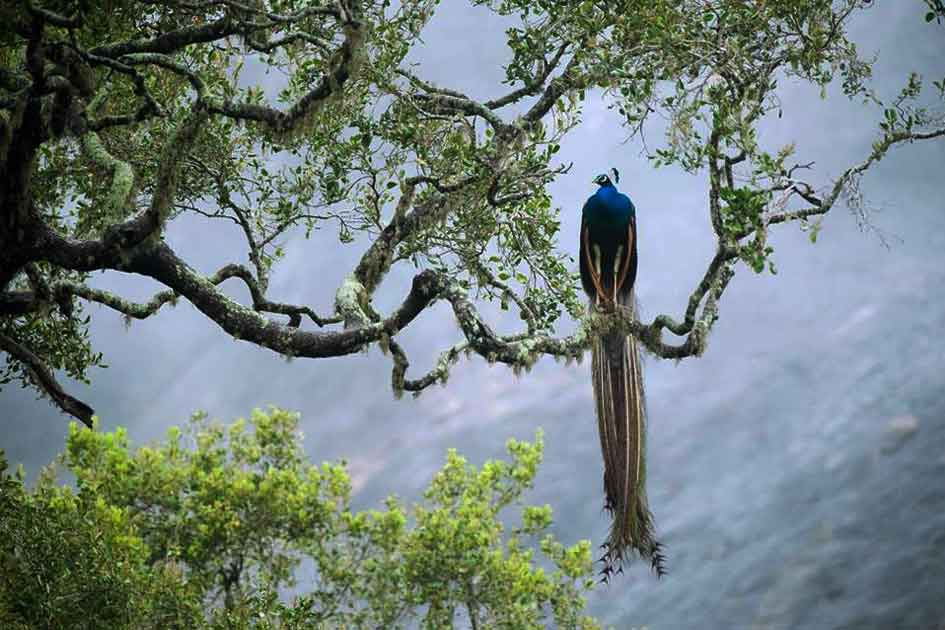
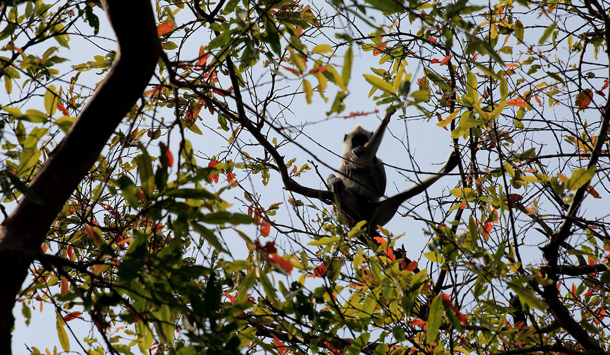
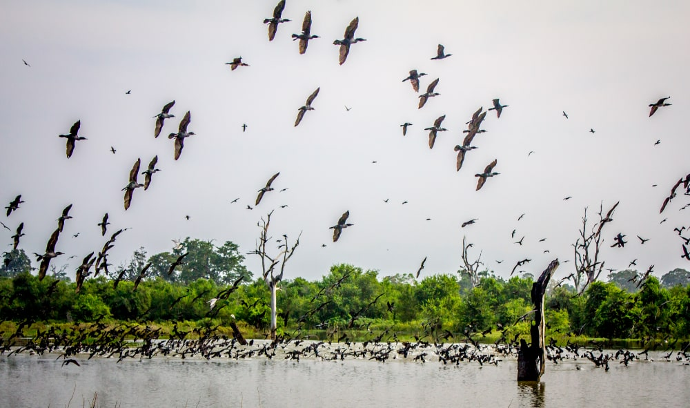

Ella is one of the most attractive places in Sri Lanka among locals and foreigners, surrounded by high mountain peaks covered with forests with beautiful views.
One of Sri Lanka's most beautiful locations is Ohiya. On a clear day, Sri Lanka's southern coast can be seen from the Ohiya Gap/Dondra Watch.
Meemure, according to the people of Sri Lanka, is the most beautiful village in the country. Meemure, with a population of roughly 500 people, lacks cellphone coverage. Meemure, around 175 kilometers from Colombo, is a popular tourist destination.
Sinharaja Forest Reserve is a forest reserve in Sri Lanka and a biodiversity hotspot. The bold Sri Lanka crested drongo and the obnoxious orange-billed babbler are almost always the ones leading the mixed-feeding flocks of birds. The 20 rainforest species of Sri Lanka's 26 indigenous birds, including the rare red-faced malkoha, green-billed coucal, and Sri Lanka blue magpie, are all found here. There are several different amphibians, including tree frogs, as well as a diversity of reptiles, including the endemic green pit viper and hump-nosed vipers. Leeches and the rare birdwing butterfly of Sri Lanka are examples of invertebrates.
Kumana National Park borders Yala National Park. This place is a swamp. Sri Lanka's Kumana National Park is famous for its avifauna, notably vast groups of migrating waterfowl and wading species. The national park is home to 255 different bird species. Tens of thousands of birds travel to the Kumana wetland area from April to July.
Anawilundawa Migratory and Endemic Waterfowl Sanctuary, measuring 1,397 hectares, is one of Sri Lanka's six RAMSAR wetlands. This wetland is made up of six huge man- built tanks and three peripheral tanks that are integrated to form a complicated irrigation system. This place is becoming quite popular among bird watchers and environment enthusiasts. During the migratory season,a great number of big birds use this region as a feeding place as well. It has been observed being utilized as a nesting habitat.
